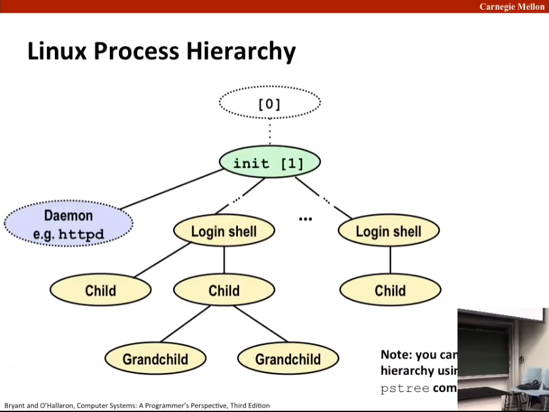
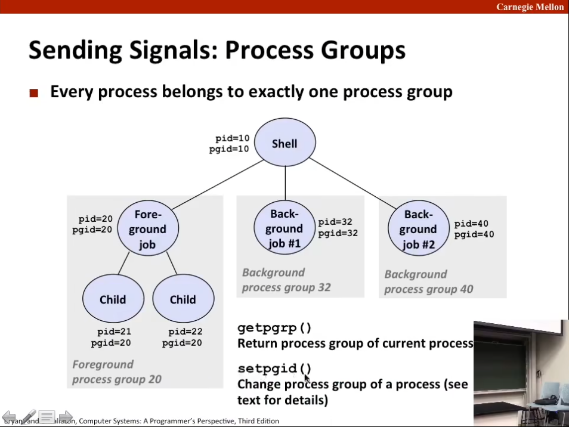
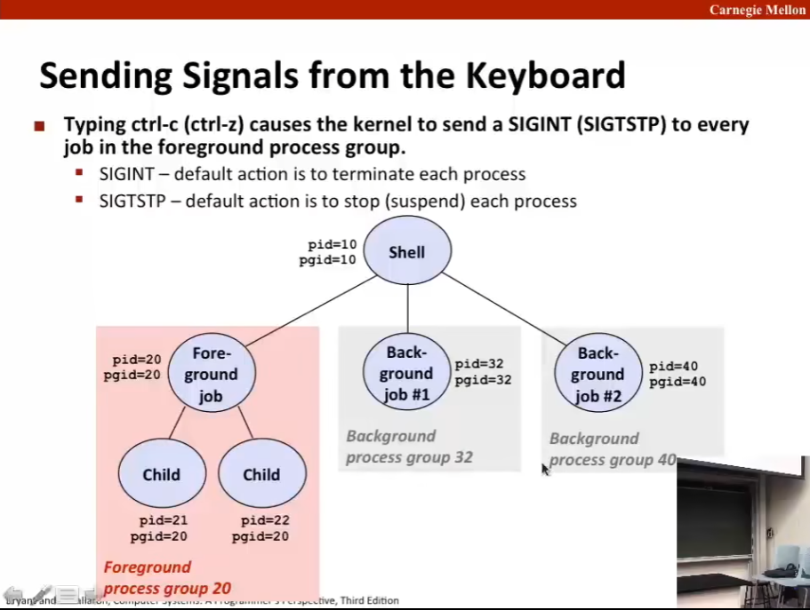
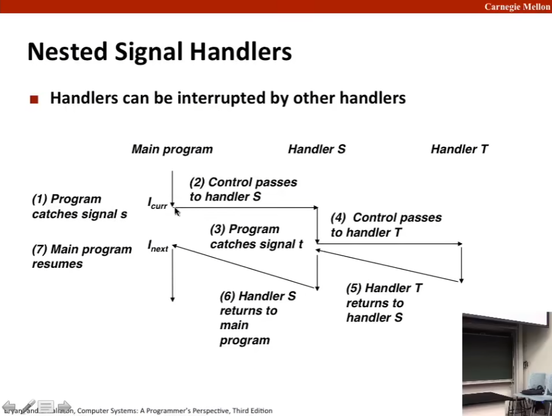

L15 Exceptional Control Flow: Signals and Nonlocal Jumps
Source: https://www.bilibili.com/video/BV1iW411d7hd?p=15
ECF Exists at All Levels of a System
Exceptions
Hardware and operating system kernel software.
Process Context Switch.
Hardware timer and kernel software.
Signals
Kernel software and application software.
Nonlocal Jumps
Application code.
其中 Exceptions 和 Process Context Switch 为 L14 内容，Signals（信号机制）为 L15 即本次课内容，Nonlocal Jumps（C 的非本地跳转）则为书和补充幻灯片所补充（textbook and supplemental slides）。
Today
Shells
Signals
Nonlocal
Linux 进程层次系统 Linux Process Hierarchy

所有进程都是 init 进程的子进程（或后代进程），init 进程 启动时会创建守护进程（daemon），其一般是一个长期运行的程序，通常用来提供服务，比如说 web 服务器，或者其他你希望你只在系统上运行的服务。然后会创建登录进程，也就是登陆 shell（login shell），其为用户提供了命令行接口（command-line interface）。在其中输入并执行命令，比如说 ls 命令，实际上实在要求 shell 运行名为 ls 的可执行程序，为了运行，其就创建一个子进程，并在其中运行程序。
shell 程序 Shell Programs
A shell is an application program that runs programs on behalf of the user.
sh: Original Unix shell (Stephen Bourne, AT&T Bell Labs, 1977).
csh/tcsh: BSD Unix C shell.
bash: "Bourne-Again" Shell (default Linux shell).
int main() {
char cmdline[MAXLINE]; /* command line */
while (1) {
/* read */
printf("> ");
Fgets(cmdline, MAXLINE, stdin);
if (feof(stdin))
exit(0);
/* evaluate */
eval(cmdline);
}
}
Execution is a sequence of read/evaluate steps.
Simple Shell eval Function
void eval(char *cmdline) {
char *argv[MAXARGS]; /* Argument list execve() */
char buf[MAXLINE]; /* Holds modified command line */
int bg; /* Should the job run in bg or fg */
pid_t pid; /* Process id */
strcpy(buf, cmdline);
bg = parseline(buf, argv);
if (argv[0] == NULL)
return; /* Ignore empty lines */
if (!builtin_command(argv)) {
if ((pid = Fork()) == 0) { /* Child runs user job */
if (execve(argv[0], argv, environ) < 0) {
printf("%s: Command not found.\n", argv[0]);
exit(0);
}
}
/* Parent waits for foreground job to terminate */
if (!bg) {
int status;
if (waitpid(pid, &status, 0) < 0)
unix_error("waitfg: waitpid error");
} else
printf("%d %s", pid, cmdline);
}
return;
}
在 shell 中有个约定，如果命令行以一个 & 符号作为结尾，那么你可以使 shell 在后台运行此作业（job）。即 shell 在读取下一个 stub 之前，不会等待这个作业完成；反之，你就是要求 shell 在前台运行此作业，shell 会等待它完成。
bg for background（后台）, fg for foreground（前台）。
shell 有一些内建的命令，shell 会检查 argv[0]，查看其是否是一个内建 shell 命令。如果不是内建的命令，那么就是在要求 shell 运行一些程序，于是 fork 一个子进程，然后使用 execve 在其中尝试运行该程序。
因为 execve() 除非有错误否则不返回，或者有错误而总是返回 -1.
接下来是父进程的事情，如果不是在后台运行，也就是在前台运行，则需要使用 waitpid 等待进程结束。否则输出一条信息并继续执行。
Problem with Simple Shell Example
Our example shell correctly waits for and reap foreground jobs.
But what about background jobs?
Will become zombies when they terminate.
Will never be reaped because shell (typically) will not terminate.
Will create a memory leak that could run the kernel out of memory.
ECF to the Rescue!
Solution: Exceptional control flow.
The kernel will interrupt regular processing to alert us when a background process completes.
In Unix, the alert mechanism is called a signal.
Signals
A signal is a small message that notifies a process that an event of some type has occurred in the system.
Akin to exceptions and interrupts.
Sent from the kernel (sometimes at the request of another process) to a process. （内核信号总是由内核发出，但有时进程也会发出信号）
Signal type is identified by small integer ID's ( 1-30).
Only information in a signal is its ID and the fact that it arrived.
ID Name Default Action Corresponding Event
2 SIGINT Terminate Used typed Ctrl-C
9 SIGKILL Terminate Kill program (cannot override or ignore)
11 SIGSEGV Terminate Segmentation violation
14 SIGALRM Terminate Timer signal
17 SIGCHED Ignore Child stopped or terminated
Signal Concepts: Sending a Signal
Kernel sends (delivers) a signal to a destination process by updating some state in the context of the destination process.
Kernel sends a signal for one of following reasons:
Kernel has detected a system event such as divide-by-zero (SIGFPE) or the termination of a child process (SIGCHLD)
Another process has invoked kill system call to explicitly request the kernel to send a signal to the destination process. （注意，kill 只是一种发信号的方式，并不一定是杀进程，起这个名字也是因为一些神秘原因）
Signal Concepts: Receiving a Signal
A destination process receives a signal when it is forced by the kernel to react in some way to the delivery of the signal.
Some possible ways to react:
Ignore the signal (do nothing).
Terminate the process (with optional core dump).
Catch the signal by executing a user-level function called signal handler（信号处理程序）.
Akin to a hardware exception handler being called in response to an asynchronous interrupt:
(1) Signal received |
by process | (2) Control passes
v to signal handler
I_curr---------------------->|
I_next|\ | (3) Signal
| \ | handler runs
| \ v
| <-------------------
v (4) Signal handler
returns to next instruction
Signal Concepts: Pending and Blocked Signals
如果一个信号被发出但尚未被接收，则称其待处理。A signal is pending if sent but not yet received.
There can be at most one pending signal of any particular type.
Important: Signals are not queued.
If a process has a pending signal of type k, then subsequent signals of type k that are sent to that process are discarded. （在某时刻，只能有一个相同类型的待处理信号。）
一个进程可以阻塞某些信号的接收。A process can block the receipt of certain signals.
被阻塞的信号可以被传递，但在阻塞解除前不能被接收。Blocked signals can be delivered, but will not be received until the signal is unblocked.
信号传递无法被阻止，但可以阻止进程在收到信号后的响应。
待处理信号最多被接收一次。A pending signal is received at most once.
Signal Concepts: Pending/Blocked Bits
Kernel maintains pending and blocked bit vectors（位向量） in the context each process.
pending: represents the set of pending signals.
Kernel sets bit k in pending when a signal of type k is delivered.
Kernel clears bit k in pending when a signal of type k is received.
blocked: represents the set of blocked signals.
Can be set and cleared by using the sigprocmask function.
Also referred to as the signal mask（信号掩码）.
Sending Signals: Process Groups（进程组）

Sending Signals with /bin/kill Program
/bin/kill program sends arbitrary signal to a process or process group.
Examples:
/bin/kill -9 24818 Send SIGKILL to process 24818.
kill -9 很常用，使用这个来杀掉某个进程。
/bin/kill -9 -24817 Send SIGKILL to every process in process group 24817.
linux> ./forks 16
Child1: pid=24818 pgrp=24817
Child2: pid=24819 pgrp=24817
linux> ps
PID TTY TIME CMD
24788 pts/2 00:00:00 tcsh
24818 pts/2 00:00:02 forks
24819 pts/2 00:00:02 forks
24820 pts/2 00:00:00 ps
linux> /bin/kill -9 -24817
linux> ps
PID TTY TIME CMD
24788 pts/2 00:00:00 tcsh
24820 pts/2 00:00:00 ps
linux>
Sending Signals from the Keyboard

Example of ctrl-c and ctrl-z
bluefish> ./forks 17
Child: pid=28108 pgrp=28107
Parent: pid=28107 pgrp=28107
<types ctrl-z>
Suspended
bluefish> ps w
PID TTY STAT TIME COMMAND
27699 pts/8 Ss 0:00 -tcsh
28107 pts/8 T 0:01 ./forks 17
28108 pts/8 T 0:01 ./forks 17
28109 pts/8 R+ 0:00 ps w
bluefish> fg
./forks 17
<types ctrl-c>
bluefish> ps w
PID TTY STAT TIME COMMAND
27699 pts/8 Ss 0:00 -tcsh
28110 pts/8 R+ 0:00 ps w
STAT (process state) Legend:
First letter: S: Sleeping; T: Stopped; R: Running.
Second letter: s: session leader; +: foreground proc group.
See man ps for more details.
注：Suspended 被挂起
Sending Signals with kill Function
void fork12() {
pid_t pid[N];
int i;
int child_status;
for (i = 0; i < N; i++)
if ((pid[i] = fork()) == 0) {
/* Child: Infinite Loop */
while (1)
;
}
for (i = 0; i < N; i++) {
printf("Killing process %d\n", pid[i]);
kill(pid[i], SIGINT);
}
for (i = 0; i < N; i++) {
pid_t wpid = wait(&child_status);
if (WIFEXITED(child_status))
printf("Child %d terminated with exit status %d\n", wpid, WEXITSTATUS(child_status));
else
printf("Child %d terminated abnormally\n", wpid);
}
}
Receiving Signals
Suppose kernel is returning from an exception handler and is ready to pass control to process p.
|Time Process A process B
| | user code
| |
| -------\
| \ kernel code \
| \------* context switch
| | user code /
| |
| /-------
| / kernel code \
| -------/ context switch
| | user code /
| |
| v
v
在 * 处就是发送接收检查信号，以确保交接控制权的一切都无误。
Kernel computes pnb = pending & ~blocked 内核通过计算位向量 pnb 来做到这一点
The set of pending nonblocked signals for process p.
If pnb == 0
Pass control to next instruction in the logical flow for p.
Else
Choose least nonzero bit k in pnb and force process p to receive signal k.
The receipt of the signal triggers some action by p.
Repeat for all nonzero k in pnb.
Pass control to next instruction in logical flow for p.
Default Actions
Each signal type has a predefined default action, which is one of:
The process terminates. 进程终止并转储内存。
The process stops until restarted by a SIGCONT signal.
The process ignore the signal.
Installing Signal Handlers
The signal function modifies the default action associated with the receipt of signal signum:
handler_t *signal(int signum, handler_t *handler)
注：和 kill 一样，这也是个有误导性的起名， 调用kill 不一定杀死进程，而只是向进程发信号；调用 signal 并不是向进程发信号，而是修改信号的默认操作。
signal 函数指定信号的信号号（signal number，此处的 signum）和一个对信号默认行为的修改（此处的 handler）。
Different values for handler:
SIG_IGN: ignore signals of type signum.
SIG_DFL: revert to the default action on receipt of signals of type signum.
Otherwise, handler is the address of a user-level signal handler（用户级信号处理函数的地址）.
Called when process receives signal of type signum.
Referred to as "installing" the handler.
Executing handler is called "catching" or "handling" the signal.
When the handler executes its return statement, control passes to instruction in the control flow of the process that was in?? receipt of the signal.
Signal Handling Example
void sigint_handler(int sig) { /* SIGINT handler */
printf("So you think you can stop the bomb with ctrl-c, do you?\n");
sleep(2);
printf("Well...");
fflush(stdout);
sleep(1);
printf("OK. :-)\n");
exit(0);
}
int main() {
/* Install the SIGINT handler */
if (signal(SIGINT, sigint_handler) == SIG_ERR)
unix_error("signal error");
/* Wait for the receipt of a signal */
pause();
return 0;
}
Signals Handler as Concurrent Flows
A signal handler is a separate logical flow (not process) that runs concurrently with the main program.
|Time Process A Process A Process B
| while(1); handler(){}
| o
| o
| o
| o
| o
|
v
信号是并发的一种形式（Signals are another form of concurrency），信号是一个并发流。
Another View of Signal Handlers as Concurrent Flows
|Time Process A process B
| | user code (main)
| | I_curr <- Signal delivered to process A
| -------\
| \ kernel code
| \------* context switch
| | user code (main)
| |
| /-------
| / kernel code
| -------/ context switch
| | user code (handler)
| |
| | kernel code
| | I_next <- Signal received by process A
| | user code (main)
| |
| v
|
v

Blocking and Unblocking Signals
Implicit blocking mechanism
Kernel blocks any pending signals of type currently being handled.
e.g. A SIGINT handler can't be interrupted by another SIGINT.
Explicit blocking and unblocking mechanism.
sigprocmask function.
Supporting functions
sigemptyset: Create empty set.
sigfillset: Add every signal number to set.
sigaddset: Add signal number to set.
sigdelset: Delete signal number from set.
Temporarily Blocking Signals
sigset_t mask, prev_mask;
Sigemptyset(&mask);
Sigaddset(&mask, SIGINT);
/* Block SIGINT and save previous blocked set */
Sigprocmask(SIG_BLOCK, &mask, &prev_mask);
... /* Code region that will not be interrupted by SIGINT */
/* Restore previous blocked set, unblocking SIGINT */
Sigprocmask(SIG_SETMASK, &prev_mask, NULL);
Safe Signal Handling
Handlers are tricky because they are concurrent with main program and share the same global data structures.
Shared data structures can become corrupted.
We'll explore concurrency issues later in the term.
For now here are some guidelines to help you avoid trouble.
Guidelines for Writing Safe Handlers
烦请参考《Unix 环境高级编程》信号一章。
G0: Keep your handlers as simple as possible.
e.g., Set a global flag and return.
G1: 在你的处理程序中只调用异步信号安全函数。Call only async-signal-safe functions in your handlers.
printf, sprintf, malloc, and exit are not safe!
G2: Save and restore errno on entry and exit.
So that other handlers don't overwrite your value of errno.
G3: Protect accesses to shared data structures by temporarily blocking all signals.
To prevent possible corruption.
G4: Declare global variables as volatile.
To prevent compiler from storing them in a register.
G5: Declare global flags as volatile sig_atomic_t
flag: variable that is only read or written (e.g. flag = 1, not flag).
Flag declared this way does not need to be protected like others.
异步信号安全 Async-Signal-Safety
Function is async-signal-safe if either reentrant (e.g., all variables stored on stack frame, CS:APP3e 12.7.2) or non-interruptible by signals.
Posix 标准确保了 117 个函数是同步信号安全的。Posix guarantees 117 functions to be async-signal-safe.
Source: man 7 signal.
Popular functions on the list:
_exit, write, wait, waitpid, sleep, kill.
Unfortunate fact: write is the only async-signal-safe output function.
Safely Generating Formatted Output
Use the reentrant SIO (Safe I/O library) from csapp.c in your handlers.
ssize_t sio_puts(char s[]) /* Put string */
ssize_t sio_putl(long v) /* Put long */
void sio_error(char s[]) /* Put msg & exit */
void sigint_handler(int sig) { /* Safe SIGINT handler */
Sio_puts("So you think you can stop the bomb with ctrl-c, do you?\n");
sleep(2);
Sio_puts("Well...");
sleep(1);
Sio_puts("OK. :-)\n");
_exit(0);
}
Correct Signal Handling
int ccount = 0;
void child_handler(int sig) {
int olderrno = errno;
pid_t pid;
if ((pid = wait(NULL)) < 0)
Sio_error("wait error");
ccount--;
Sio_puts("Handler reaped child ");
Sio_putl((long)pid);
Sio_puts(" \n");
sleep(1);
errno = olderrno;
}
void fork14() {
pid_t pid[N];
int i;
ccount = N;
Signal(SIGCHLD, child_handler);
for (i = 0; i < N; i++) {
if ((pid[i] = Fork()) == 0) {
Sleep(1);
exit(0); /* Child exits */
}
}
while (ccount > 0) /* Parent spins */
;
}
Pending signals are not queued.
For each signal type, one bit indicates whether or not signal is pending...
... thus at most one pending signal of any particular type.
You can't use signals to count events, such as children terminating.
Must wait for all terminated child processes.
Put wait in a loop to reap all terminated children.
void child_handler2(int sig) {
int olderrno = errno;
pid_t pid;
while ((pid = wait(NULL)) > 0) {
ccount--;
Sio_puts("Handler reaped child ");
Sio_putl((long)pid);
Sio_puts(" \n");
}
if (errno != ECHILD)
Sio_error("wait error");
errno = olderrno;
}
Portable Signal Handling
Ugh! Different versions of Unix can have different signals handling semantics.
Some older systems restore action to default after catching signal.
Some interrupted system calls can return with errno == EINTR.
Some systems don't block signals of the type being handled.
Solution: sigaction
handler_t *Signal(int signum, handler_t *handler) {
struct sigaction action, old_action;
action.sa_handler = handler;
sigemptyset(&action.sa_mask); /* Block sigs of type being handled */
action.sa_flags = SA_RESTART; /* Restart syscalls if possible */
if (sigaction(signum, &action, &old_action) < 0)
unix_error("Signal error");
return (old_action.sa_handler);
}
Synchronizing Flows to Avoid Races
Simple shell with a subtle synchronization error because it assumes parent runs before child.
int main(int argc, char **argv) {
int pid;
sigset_t mask_all, prev_all;
Sigfillset(&mask_all);
Signal(SIGCHLD, handler);
initjobs(); /* Initialize the job list */
while (1) {
if ((pid = Fork()) == 0) { /* Child */
Execve("/bin/date", argv, NULL);
}
Sigprocmask(SIG_BLOCK, &mask_all, &prev_all); /* Parent */
addjob(pid); /* Add the child to the job list */
Sigprocmask(SIG_SETMASKJ, &prev_all, NULL);
}
exit(0);
}
SIGCHLD handler for a simple shell.
void handler(int sig) {
int olderrno = errno;
sigset_t mask_all, prev_all;
Sigfillset(&mask_all);
while ((pid = waitpid(-1, NULL, 0)) > 0) { /* Reap child */
Sigprocmask(SIG_BLOCK, &mask_all, &prev_all);
deletejob(pid); /* Delete the child from the job list */
Sigprocmask(SIG_SETMASK, &prev_all, NULL);
}
if (errno != ECHILD)
Sio_error("waitpid error");
errno = olderrno;
}
Corrected Shell Program without Race
int main(int argc, char **argv) {
int pid;
sigset_t mask_all, mask_one, prev_one;
Sigfillset(&mask_all);
Sigemptyset(&mask_one);
Sigaddset(&mask_one, SIGCHLD);
Signal(SIGCHLD, handler);
initjobs(); /* Initialize the job list */
while (1) {
Sigprocmask(BIG_BLOCK, &mask_one, &prev_one); /* Block SIGCHLD */
if ((pid = Fork()) == 0) { /* Child process */
Sigprocmask(SIG_SETMASK, &prev_one, NULL); /* Unblock SIGCHLD */
Execve("/bin/date", argv, NULL);
}
Sigprocmask(SIG_BLOCK, &mask_all, NULL); /* Parent process */
addjob(pid); /* Add the child to the job list */
Sigprocmask(SIG_SETMASKJ, &prev_one, NULL); /* Unblock SIGCHLD */
}
exit(0);
}
Explicitly Waiting for Signals
Handlers for program explicitly waiting for SIGCHLD to arrive.
volatile sig_atomic_t pid;
void sigchld_handler(int s) {
int olderrno = errno;
pid = Waitpid(-1, NULL, 0); /* Main is waiting for nonzero pid */
errno = olderno;
}
void sigint_handler(int s) {
}
Similar to a shell waiting for a foreground job to terminate.
int main(int argc, char **argv) {
sigset_t mask, prev;
Signal(SIGCHLD, sigchld_handler);
Signal(SIGINT, sigint_handler);
Sigemptyset(&mask);
Sigaddset(&mask, SIGCHLD);
while (1) {
Sigprocmask(SIG_BLOCK, &mask, &prev); /* Block SIGCHLD */
if (Fork() == 0) /* Child */
exit(0);
/* Parent */
pid = 0;
Sigprocmask(SIG_SETMASK, &prev, NULL); /* Unblock SIGCHLD */
/* Wait for SIGCHLD to be received (wasteful!) */
while (!pid)
;
/* Do some work after receiving SIGCHLD */
printf(".");
}
exit(0);
}
Program is correct, but very wasteful.
Other options:
while (!pid) /* Race! */
pause();
while (!pid) /* Too slow! */
sleep(1);
Solution: sigsuspend.
Waiting for Signals with sigsuspend
int sigsuspend(const sigset_t *mask)
Equivalent to atomic (uninterruptable) version of:
sigprocmask(SIG_BLOCK, &mask, &prev);
pause();
sigprocmask(SIG_SETMASK, &prev, NULL);
int main(int argc, char **argv) {
sigset_t mask, prev;
Signal(SIGCHLD, sigchld_handler);
Signal(SIGINT, sigint_handler);
Sigemptyset(&mask);
Sigaddset(&mask, SIGCHLD);
while (1) {
Sigprocmask(SIG_BLOCK, &mask, &prev); /* Block SIGCHLD */
if (Fork() == 0) /* Child */
exit(0);
/* Wait for SIGCHLD to be received*/
pid = 0;
while (!pid)
Sigsuspsend(&prev);
/* Optionally unblock SIGCHLD */
Sigprocmask(SIG_SETMASK, &prev, NULL);
/* Do some work after receiving SIGCHLD */
printf(".");
}
exit(0);
}